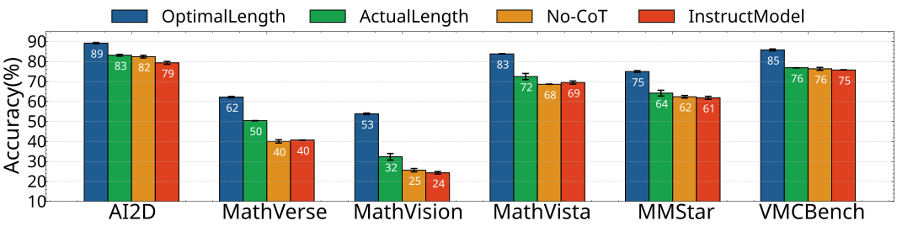
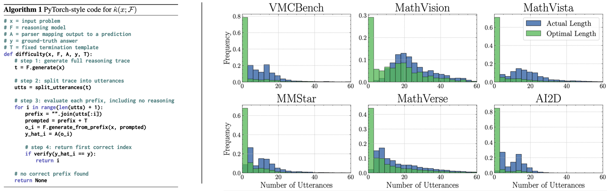
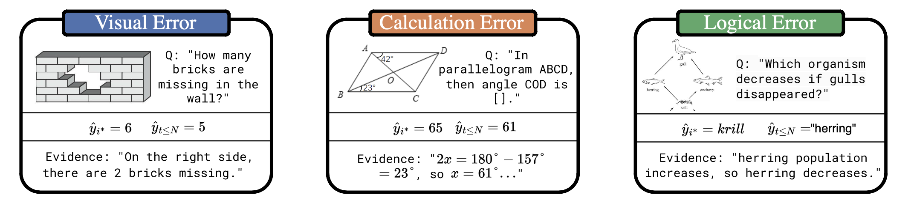

Large Reasoning Models improve performance by producing explicit intermediate reasoning traces with additional test-time compute. However, longer reasoning is not always beneficial. We ask whether a model that has already reached the correct answer continues to refine that answer or instead drifts away from it. To study this, we introduce a prefix-level trajectory evaluation protocol grounded in reasoning sufficiency: the minimum reasoning budget required for a model to first generate the correct answer. This separates verbose overthinking, where additional reasoning is redundant but harmless, from harmful overthinking, where continued reasoning destabilizes an already-correct trajectory. Across multimodal and language-only benchmarks, stopping at the first correct prefix improves accuracy over default reasoning, revealing that current models are limited not only by their ability to reason, but also by their inability to stop at the right time.


@misc{caldarella2026overthinking,
title = {Thinking Past the Answer: Evaluating Harmful Overthinking in Large Reasoning Models},
author = {Caldarella, Simone and Talon, Davide and Ricci, Elisa and Aljundi, Rahaf and Mancini, Massimiliano},
year = {2026},
note = {Preprint}
}